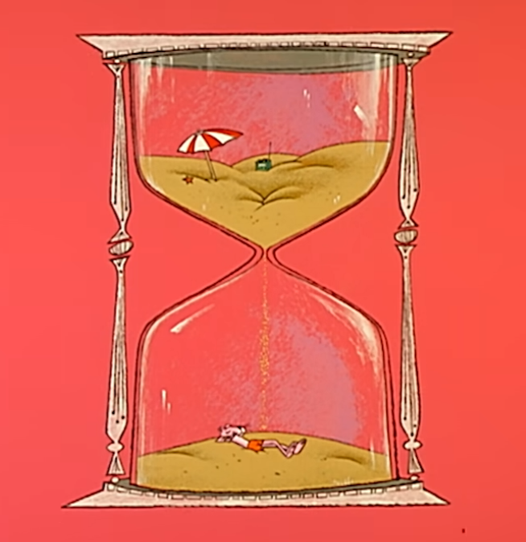

Is this undeniable proof that Agartha is real?
The above image depicts Pink Panther in what appears to be a subterranean society, not unlike Agartha. Is this real? If real, Pink Panthers's Agartha gives us insight into how Agartha might function.
Pink Panther's Agartha is the maxim "beauty in simplicity" in action. In contrast with the typical depiction of Agartha as a sprawling society with massive palaces and gardens, Pink Panther's Agartha is desolate and small. There are no material possessions; when Pink Panther descends to Agartha, he must leave his radio and umbrella behind. Pink Panther is left with nothing but his thoughts to keep himself company.